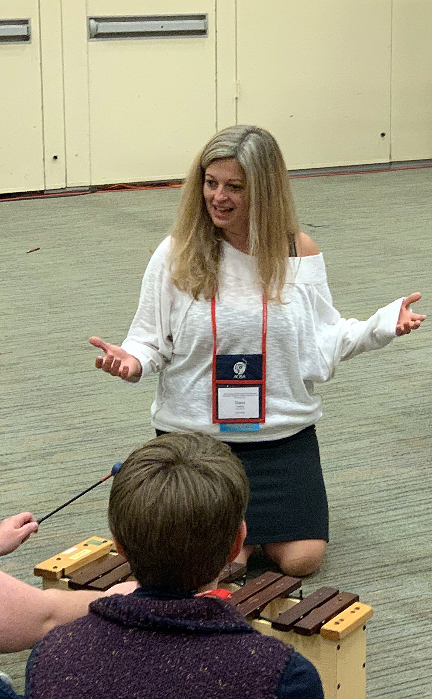
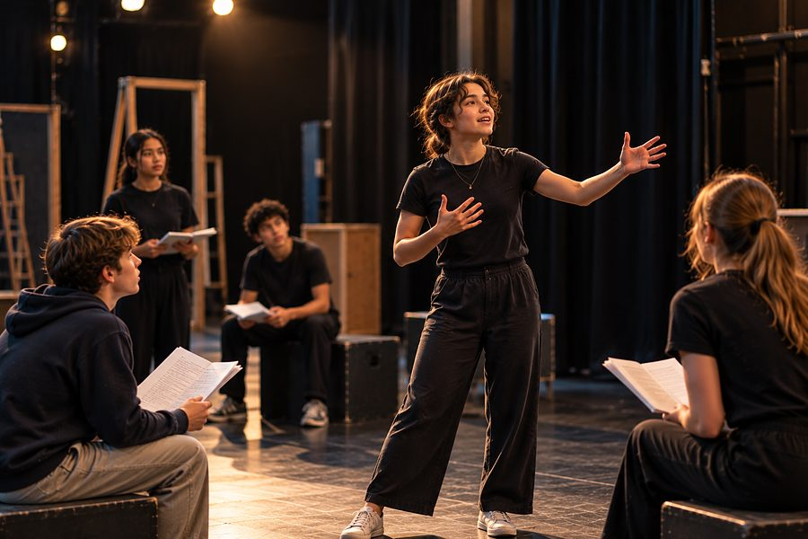
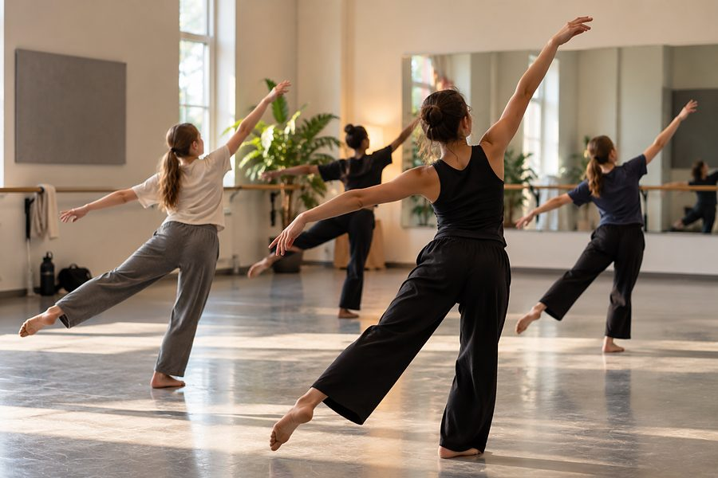
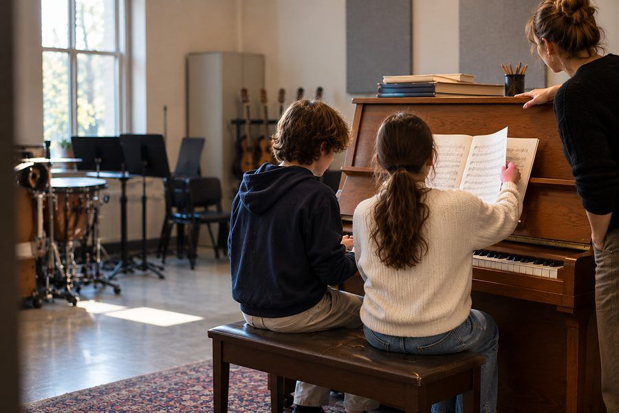
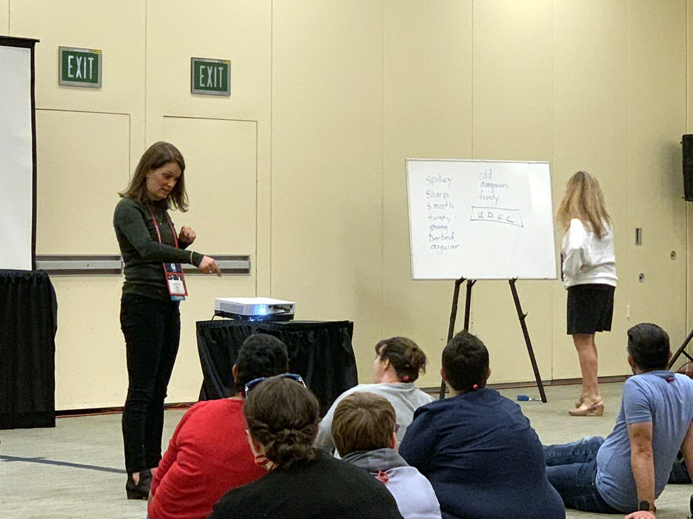
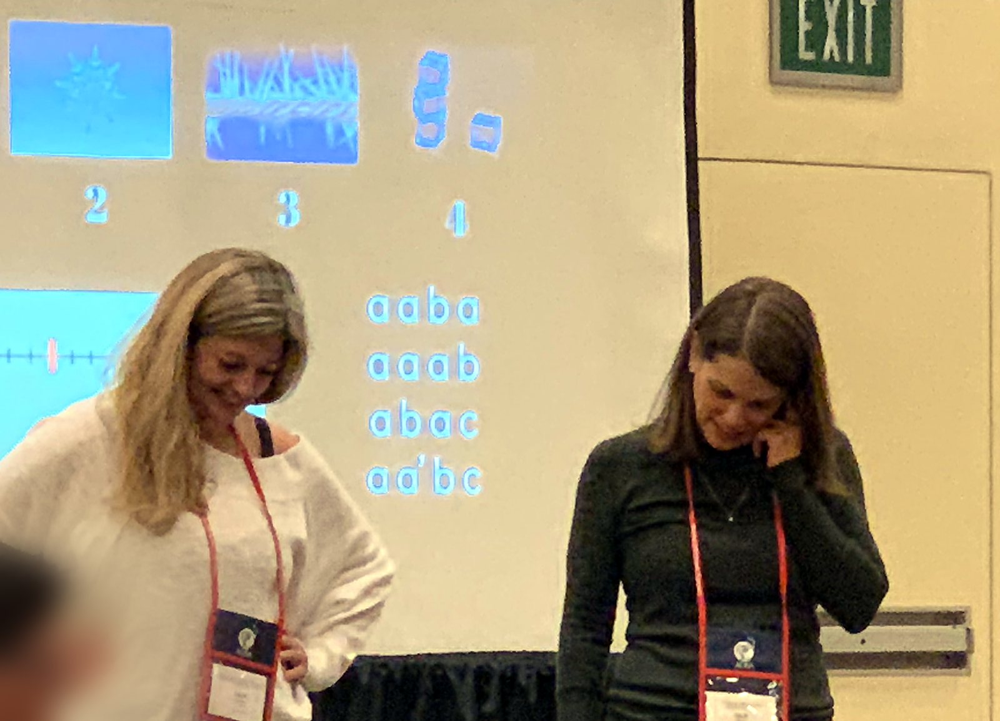

Asterine works with arts teachers, the coaches and leaders who support them, and the programs that prepare them. Sightline, our lesson-analysis tool, is often where that work starts.

Sightline
Sightline takes a lesson you have already taught and helps you examine it move by move. Everything happens on your own computer.
A video, an audio file, or a transcript you already have. Transcription and speaker labelling run in your browser, on your machine. It does not record for you and never asks for your microphone.
Work down the transcript and tag each moment with the Learning Move it shows. The definitions stay beside you while you work.
The whole-lesson view lays every move out across the lesson, so you can see what you lean on and what rarely appears. Counterpoint offers a second reading of the same moments to compare with your own.



Illustrative images; not photographs of our students.
The six Learning Moves
Six moves, each with a working definition. Three are things the teacher does and three are things students do. The same six are the vocabulary of the training, the tool, and the conversation afterward.
Teacher artfully demonstrates artistic materials and processes.
Teacher provides supports in student learning.
Students communicate their understanding.
Students use artistic materials in new ways.
Teacher provides customized feedback during learning.
Students examine their process and product.
Who it's for

You may be the only arts teacher in your building, with nobody down the hall who teaches what you teach. Sightline gives you a way to look hard at one of your own lessons and compare your reading of it against another.
Try SightlineA 90-minute session introduces the framework and the tool to a team. Teachers code the same short moments and then compare their decisions, which builds a shared vocabulary across a department or a district.
Book a 90-minute trainingArts and related-arts staff rarely get professional development built for their own discipline. This gives them a specific, documented focus for the year, and the recordings stay on the teacher's device.
Start a conversationUse Sightline in methods courses, student teaching, and supervision, so a candidate and an instructor can examine the same rehearsal or lesson together. A research-use option is available for faculty.
Ask about a pilotPrivacy
Privacy documentation for a district review is available on request.
Who we are

Our mission is to sustain arts education by supporting the people who make it possible: the teachers in arts classrooms and the coaches, administrators, and teacher educators who support them. Making art is deeply human, embodied and shared, and a way communities come to know themselves.
Asterine works alongside teachers, schools, districts, and teacher-education programs to strengthen instruction, design arts programs, develop curriculum and assessment, and build classroom culture, within the time, budgets, and staffing schools actually have. Sightline is one part of that work.
Twenty-five years teaching music in public schools, Academic Provost of a 6-12 performing and visual arts school, and an adjunct instructor in instructional design at the University of Iowa. PhD in educational psychology, with an emphasis in developmental science and statistics.
DMA. Decades in arts education as a teacher, clinician, and adjunct instructor across nine appointments, with a long record of presenting and workshop facilitation in music education.
The framework Sightline codes is our own, in print since 2020: Brown, B., & Hawley, D. (2020). Facilitating music making through cognitive apprenticeship in the Orff Schulwerk tradition. The Orff Echo, 52(2), 22-26.
What it costs
We are setting the final structure now. Ask and we will send you current pricing and everything a school needs to make a decision.